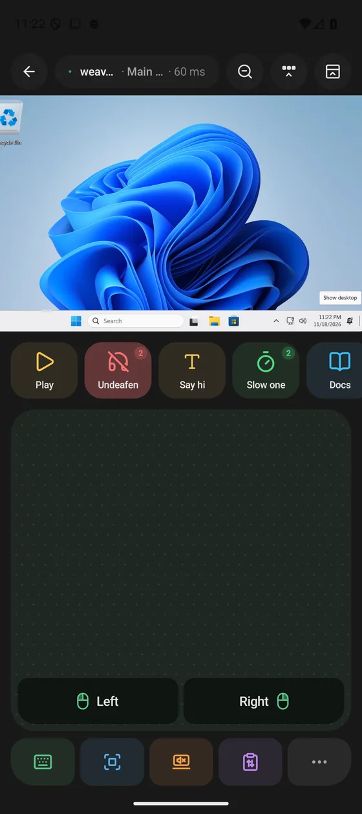
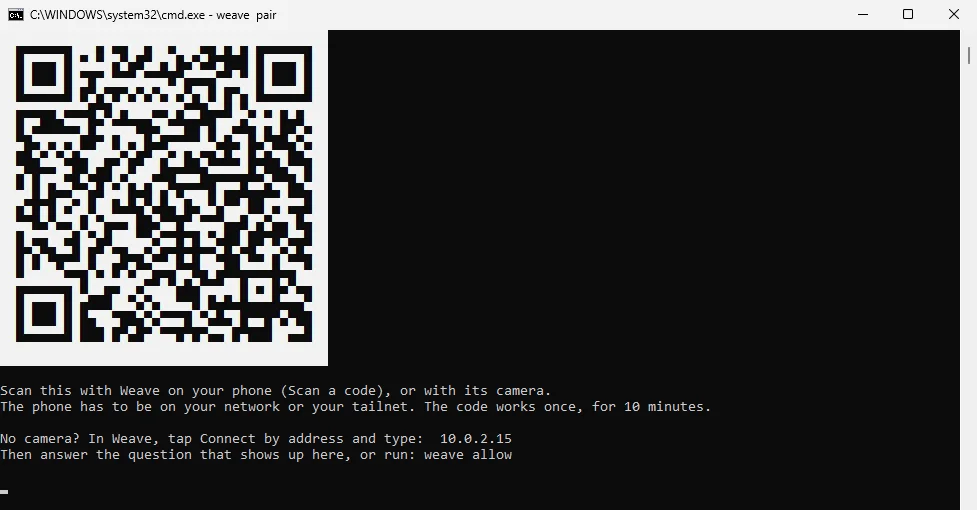
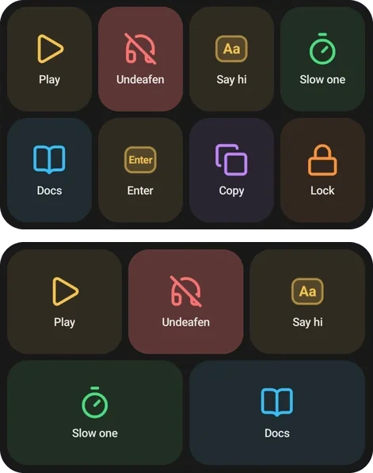

Your computer, run from your phone.
Its screen at the top of your phone, a trackpad under your thumb, and your phone's own keyboard typing on it. From the couch, or from anywhere.
Android 8 and up. Windows 10 and 11, and Linux with Hyprland. Free and open source.

Set up in three steps
No account and no cloud in between. The phone talks straight to your computer.
Install it on the computer
One command. No admin rights needed. It starts with the computer from then on.
irm https://t3lluz.com/weave/install.ps1 | iexPaste it into PowerShell. It brings its own Python and ffmpeg, all in one folder of your own.
curl -fsSL https://t3lluz.com/weave/install.sh | shFor Hyprland. It needs python3, gpu-screen-recorder, wl-clipboard and wtype.
Get the app
Download the APK on your phone and open it. Weave keeps itself up to date after that.
Download for AndroidScan the code
The installer ends with a code on the computer's screen. Tap Scan a code in the app. Later, weave pair shows a new one.

What it does
Built for a phone held in one hand.
The screen, live
Every monitor. Pinch to zoom. The view follows the pointer and slides over when it moves to the next monitor. Turn the phone sideways and the screen fills it.
A trackpad that keeps up
The phone draws the pointer itself, so it moves the moment your finger does. Tap to click, hold to drag, two fingers to scroll.
Your phone's keyboard
Autocorrect, swipe typing and any language. It comes up by itself when you click into a text field.
Shortcuts, also on your home screen
Bring an app to the front, open a page, press keys, type, wait: one step or several in a row. Describe one to Claude ("deafen me on Discord") and it plans the steps and picks the icon. Put two to eight of them in a widget and run them without opening Weave.

Sound
Hear what the computer plays, on the phone. Media keys and volume are a tap away.
One clipboard
Copy on one, paste on the other. Send it by hand, or keep the two in step.
Lock and wake
Lock the computer when you leave the room. Wake it from sleep when you're on the same network.
Where it works from
At home, the phone finds the computer on your Wi-Fi. Away, it reaches it over Tailscale, if both have it. One scan covers both: the code carries every address the computer has.
Weave doesn't encrypt what the two say to each other. Tailscale does. On your own Wi-Fi it is as private as that Wi-Fi. A phone gets in only with a code from the computer's screen, or after you say yes on the computer.
Windows and Linux
The same app talks to both.
| Windows | Linux (Hyprland) | |
|---|---|---|
| Screen, every monitor | Yes | Yes |
| Mouse, keyboard, text in any language | Yes | Yes |
| The computer's sound on the phone | Yes | Yes |
| Clipboard both ways | Yes | Yes |
| Apps and their icons for shortcuts | Yes | Yes |
| Your key bindings listed for shortcuts | No | Yes |
| The phone's sound on the computer | Not yet | Yes |